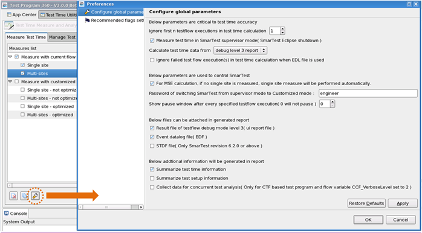

Global parameters
When Measuring test time, you can control the measuring behavior through configuring these global parameters.
To open the global parameters configuration page, click the icon on the Measure Test Time tab to open the Preference page and select Configure global parameters.

As shown in the above graphic, the following parameters are available:
Parameters for measurement accuracy
- Ignore first n testflow executions in test time calculation: If entering an integer n (1 to 999), the loaded testflow is executed for "Loop count"+n times for every specified measurement, but the test time of the first execution is not measured and reported in the test time report.
- Measure test time in SmarTest supervisor mode (SmarTest Eclipse shutdown): If checking this item, the test program is executed in the SmarTest supervisor mode.
- Calculate test time data from test time resources: You can select
"debug level 3 report" or "EDL file" (Event data
log).
If you select "EDL file", the report contains the test time of each test suite in each execution.
- Ignore failed testflow execution(s) in test time calculation when EDL file is used: When the data is from event log, checking this option excludes the failed testflow executions from the test time measurements and from importing.
- For MSE calculation, if no single site is measured, single site measure will be
performed automatically: The calculation of MSE (Multisite efficiency) needs test
time of both multisite and single site under the same measuring conditions.
By checking this option,
- If you have set up measurement conditions only for multisite, TP360 also measures the test time of the single site according to the multisite measurement conditions.
- If you have already measured the single site and the multisite, TP360 tries to find the test time of the most similar measurement (including the conditions of "Optimize testflow" and "Testflow flag setting").
Parameters to control SmarTest
- Password of switching SmarTest from supervisor mode to engineering mode: Lets you enter the password if you change the default password of switching SmarTest from the supervisor mode to the engineering mode.
- Show pause window after every specified testflow execution (0 will not
pause): By specifying an integer for this item, the measurement is paused after
each specified number of testflow executions so that you can do something, for example, change
devices.
"0" means no pause. The default value is 0.
For example, if you enter "2" here, the measurement is paused and shows a pause window after every 2 executions of a testflow.
Parameters for files to be attached into the report
- Result file of testflow debug mode level 3 (ui report file): Checking
this item generates a debug mode level 3 file in addition to the test time report in the Report
view.
The debug mode level 3 file is attached to the Report view.
- Event datalog file (EDF): Checking this item generates an event data
log file in addition to the test time report in the Report view.
This file is attached to the Report view.
- Csv based test time file from EDF (Only SmarTest revision 6.5.2 or
above): Checking this item generates a csv file based on the test time from
EDF.
This file is attached to the Report view.
- STDF file (Only SmarTest revision 6.2.0 and above): Checking this
item generates an STDF file in addition to the test time report in the Report view.
This file is attached to the Report view.
- MCDlog file: Checking this item to attach the MCDlog file to the Report view.
- Capture MSDlog file at specified test flow execution: specify a testflow index which the MCDlog file will be captured for.
Parameters for information to be generated in the Report window
- Summarize test time information: Checking this item generates the summary of test time in the test time analysis part of the report.
- Summarize test setup information: Checking this item generates the summary of test setups in the test time analysis part of the report.
- Collect data for concurrent test analysis (Only for CTF based test program and flow variable CCF_VerboseLevel set to 2): Checking this item generates the information about concurrent test analysis in the test time analysis part of the report.
Functional changes
- Introduced in SmarTest 7.2.2